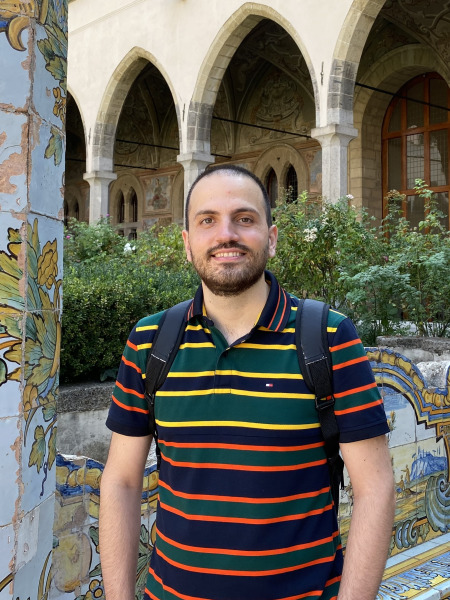

I am an Assistant Professor in the Department of Electrical and Computer Engineering at the University of Waterloo.
In my research, I am broadly interested in robot design and control for long-duration autonomy with applictions to sustainable environmental monitoring for climate change mitigation and adaptation. More details here. If you are interested in working or collaborating with me, don't hesitate to reach out!
My multi-scale quasiperiodic academic path bounced multiple times between Italy and Germany, and between Europe and the Americas. I studied Mechanical and Automotive Engineering in Napoli and Ingolstadt, respectively, I completed a PhD in Robotics at the Georgia Institute of Technology, and I spent one year as a post-doctoral researcher at the CNRS in Rennes, France. Here is the complete trajectory.